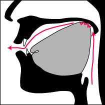
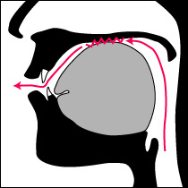
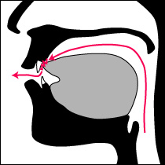
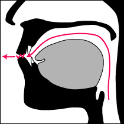

特徴の概要
音韻｜文字表記｜屈折（曲用・活用）のカテゴリー｜派生・語構成｜構文
基本的に、古典印欧語に特徴的に見られる、典型的な屈折語の性質を持つ。古典印欧語のうちでも、形態が複雑なほうの代表格であり、もとの印欧祖語からは、より屈折を複雑化する方向に変化した言語であろうと考えられている。また、インド亜大陸に並存したドラヴィダ語族との相互影響が強く、反舌音など音韻面や、語彙の面でもそれが見られる。
・音韻
＃音韻概説
13種類（実際の単語に使われない文字を含めると14種類）の母音、35種類の子音から成る。
母音には、音節を作る[r]=/ṛ/と[l]=/ḷ/が数え入れられている。/a/,/i/,/u/,/ṛ/について、長母音と短母音の対立がある。/e/と/o/は常に長母音であって、起源から二重母音として扱われる。本物の二重母音として/ai/,/au/が存在する。文法機能上からは、半母音字との結合で示されるところの、/ar/,/ār/,/al/も、二重母音的側面を持つ。
母音の出現頻度は、短く軽い/a/が大差をつけて最も多く、続いて/i/,/u/,の順である。二重母音は頻度が低い。
子音は、破裂音の種類が多く、主な各調音点において、無声無気音・無声有気音・有声無気音・有声有気音の四種類が対立する。有声音の無気／有気の対立は、比較的珍しい現象である。一方で、有声の摩擦音[z]などは存在せず（但し有声の気音/h/や、半母音としての[v/w]=/v/は存在する。歴史時代以前には/z/,/ẓ/,/ź/も存在したと見られている。）、また、破擦音のうち/ts/の音素や[dz]の音声も存在しない。
舌先を使う音には、前歯の裏に舌先をつける歯音（dental）と、舌の中央を窪ませて舌先を反り上げ舌先の裏を上顎に付ける反舌音（retroflex;lingual）とが対立する。四種の破裂音、鼻音、無声摩擦音、半母音、母音の全てにわたって、この両調音点が対立する（この場合の半母音とは、/l/と/r/のことである。それらと対応する「母音」があることと関連する）。（※下図参照）
語頭や文中に、子音・半母音の連続はかなりあり、語頭では/str-/など三つ程度、語中では/-ṅktv-/,/-ṇḍry-/など四つ程度の連続まで出てくるが、その場合は母音的な側面を持つ半母音や鼻音を、最初や最後に含んでいる。頻度は子音が連続していない場合の方が多く、語頭では二つ、語中では三つの連続までが普通である。但し、プラークリットには見られない、長い母音の前後にさらに複数の子音が続く、四音長・五音長の非常に長い音節が許される。文末では子音連続を嫌って、複数が並びそうなときには、略されて、最初の一つだけが残るのが原則である（特別な場合のみ、二重母音の一部とも言える半母音/r/の次に、もう一つ子音が残りうる）。母音の連続は常に嫌う傾向があり、両者が融合するか、後者が消滅することが多い。
アクセントは、日本語と類似の高低アクセントで、示すときには文字の上下に水平・垂直の短い線で符号を加える。また、音の長さの感じ方の単位を持ち、母音の長さには短・長・三倍長（重長）の三段階（即ち長母音には更に二種類）がある。但し/a/と/ā/については単なる長短の対立ではなく、/a/は狭い[ə]であって、/ā/ははっきり広いアである。
＃5つの調音点（調音域）
サンスクリットの子音は、5つの調音点（調音域）によって分類配列される。辞書的な文字の配列も、調音点の順序に従っており、その順序は、喉に近い奥の方から、口先の方に向かう順になっている。
対応する母音も含めて示すと、下の模式図のようになる。
- 1.喉音（後舌面軟口蓋音）
- 
k, kh, g, gh, ṅ,
- 2.口蓋音（前舌面硬口蓋音）
- 
c, ch, j, jh, ñ,
ś, y, /
i, ī, e, ai,
- 3.反舌音（裏面舌尖硬口蓋音）

ṭ, ṭh, ḍ, ḍh, ṇ,
ṣ, r, /
ṛ, ṝ,
- 4.歯音（舌尖歯音）
- 
t, th, d, dh, n,
s, l, /
ḷ, (ḹ),
- 5.唇音（両唇音）
- 
p, ph, b, bh, m,
(v), /
u, ū, o, au,
反舌音は舌を反らせる日本語に殆ど見られない構えだが、歯音も前歯の裏に舌を当てる構えで、日本語のタ行子音の標準より調音位置が前である。この反舌音と歯音とは、互いに連続しづらいため、反舌音に続く歯音が条件により反舌音に変わるなど、音韻上の制約がある。
口蓋音も、日本語のチャ行音よりかなり奥寄りの構えである。日本語のチャ行音の子音は/t/が口蓋化したものだが、サンスクリットの口蓋音は喉音と関係が強い。この口蓋音を、日本語と同じようにもっと前寄りの舌端歯茎音などで発音すると、歯音や反舌音との連続が明らかに発音しづらくなるのでご注意を。
#連声（サンディ/sandhi）
次に続く単語乃至要素との関係で、発音の変化が頻繁に起こり、そしてその変化した通りに文字表記される。フランス語風に言うとリエゾンやアンシェヌマンだが、サンスクリットでは単語内の要素間の連結の場合も含むことと、発音につれて書かれる綴りの方も変わるところに特徴があり、「連結」という意味で「サンディ」と呼ばれる。大雑把に言って、単語の内部での形態素同士の融合を「内連声」、単語を超えた前後関係を「外連声」と呼び、その法則に違いがある。
これらの規則によって、次の単語の頭の音が消滅したり、前の音と融合したりするので、それを知らないと単語の切れ目の見当がつかず、辞書を引くことも不可能である。だから、まずこの規則を覚えることが学習上不可欠である。
なお、外連声は、学習システムによっては入門段階では無視されるし、また、会話でも守られないことが多いという。
・文字表記
サンスクリットは、歴史上様々な文字を使って書き表されてきたが（日本のいわゆる梵字もその一つ）、ここ500年以上主流となってきたのが、デーヴァナーガリー（Deva-nāgarī／देवनागरी）文字（またはヒンディー語風に「デーウナーグリー文字」）である。この文字は、古代インドのブラーフミー文字の末裔の一つで、現代語では、ヒンディー語、マラーティー語、ネパール語などに用いられ、インド系の文字では最も使用人口の多い文字と思われる。なおインド文化圏では、今でもデーヴァナーガリー以外の各文字でサンスクリットを書くことが可能であるし、また少数ながら行われている。タミル語文化圏におけるサンスクリット用文字体系であるグランタ（Grantha）文字は、デーヴァナーガリーではないサンスクリット用文字の代表的な例である。
一方で、ヨーロッパでは、サンスクリットを、ラテンアルファベットに適切な符号を加えた文字に書き換える（ローマナイズする）ことが多く、日本でも、文法書や辞書や研究書において、このローマナイズが広く行われている（但し、その方式には幾つかのバリエーションがあり、このホームページでもそのうちの標準的なものと変種の一つに依っている）。もともと発音と文字表記とが殆ど一対一対応をしている言語なので、各音素を区別できさえすれば、書き換えによる不便は少ない。
猶、漢訳の経典では、サンスクリットの発音を漢字の音で写し、子音連続（漢字各々には（仏教伝来以前の上古の議論は除き）子音連続はない）や母音の長短を、「合」「引」などの小さな文字を振って示す方法もあった。写す時には、どの音にはどの漢字を使うかの標準がほぼそれぞれの時代の訳経者にあって、それに従っている。漢字の発音も、日本・漢土双方において、時代を経て変わってきているので、注意が必要である。
片仮名表記にも、音の弁別を重視したものから平易さを重視したものまで幾つもの方法があり、定番はない。いずれにしても、仮名で発音や表記を全てきちんと書き分けることは困難であり、そのためには加点・加線を駆使したり平仮名・片仮名を使い分けるなどの特殊な手段が不可欠である。特に、古くからの真言（マントラ）などの仮名表記は、その当時の日本語の音韻の事情に従っている場合が多いので、現代日本語での発音からそのまま梵語の原音を推測してはならない。
デーヴァナーガリー文字は、他のインド系文字の多くと同じく、子音を表す部分と母音を表す部分を融合して一つの音節を表す「音素音節文字」であり、その点では、朝鮮半島で後世に成立したハングルなどと比較的近いシステムである。但し、融合時の変形の仕方の例外を幾つか覚えなくてはならない。左から右への横書きで、文字の上寄りにシュローレーカーと呼ばれるベースラインの横棒が通っているのが特徴（これはベンガル文字などと共通）である。
各一文字は基本的には、
“＜一つ以上の子音符号＞＋＜母音符号＞＋＜ゼロor/ṃ/or/ḥ/＞”或は
“＜母音単独字＞＋＜ゼロor/ṃ/or/ḥ/＞”
という構造をしていて、/ṃ/,/ḥ/以外の子音を直後の母音なしに書き表す時には、
“＜一つ以上の子音符号＞＋＜母音なし符号＞”
という形の文字を用いる。
この言語では、前の単語と後の単語の音が融合させたり続け書きしたりできない場合を除き、単語の区切りで綴りを区切らないのが原則なので、読む者は、自分で切れ目を見つけて辞書を引かなくてはならない。学習上厄介なことであるが、それ自体は、ラテン語やギリシャ語の古文書はもちろん、我が日本語とも同じことである。文字の辞書等での順番は、これが、漢字の音を整理する順番や日本語の五十音図のもとになったとも言われるだけあって、日本語のアイウエオ順の発想から応用しやすい（英語的に引こうとすると混乱する）。
・屈折（曲用・活用）のカテゴリー
#性
サンスクリットの文法性（gender）は、男性・女性・中性の区別があり、あらゆる実名詞・形容詞・数詞・分詞、及び我（一）・汝（二）人称の人称代名詞を除く代名詞を支配する。但し、すべての格変化形において三性が互いに異なるわけではない。例えば、男性に対して中性は、主格・対格・呼格の三つの格の形だけが相違するのが原則である。また、両数での具格・為格・従格も、しばしば三つの性に共通する。
#数
サンスクリットでは、単数（singular）・両数（dual）・複数（plural）の三つの数のカテゴリーを区別し、語尾変化するあらゆる品詞（名詞・代名詞・形容詞・動詞及びその分詞）を支配する。両数は、一対のもの、複数は、三つ以上のものを表す。殆どすべての変化形において、数が違えば語形が変わる。
#格
格には、主格（nominative）・対格（accusative/業格・目的格）・具格（instrumental/造格）・為格（dative/与格）・従格（ablative/奪格）・属格（genitive/生格）・処格（locative/地格・依格）・呼格（vocative）の八種類がある。あらゆる実名詞・形容詞・代名詞・数詞・分詞を支配する。
なお、すべての性・数において、八種類の格形に差異があるわけではなく、単数形でも六種類から七種類の形のことがあり、複数形では五種類のものもあるが六種類が普通（代名詞の一部で七種類）、両数形では、常に三種類の形しか持たない（主格＝対格＝呼格、具格＝為格＝従格、属格＝処格である）。
伝統的な文法学では、このうち呼格を独立した格と認めず、主格の一種として、七格を数える。
主格は、主語や主語と同格の補語を表し（～が、～は）、対格は、直接目的語（～を、～まで）、具格は、同伴・道具・受動構文の動作主など（～とともに、～で、～によって）、為格は、間接目的語（～に、～へ）、従格は、出発点・比較基準・原因など（～から、～より、～のせいで）、属格は、所有・所属・属性・材質など（～の）、処格は、場所・時間・状況など（～で、～において）、呼格は、呼びかけ（～よ）に用いられる。
#比較
形容詞には、平常級の他に、比較級と最上級の変化がある。
比較級と最上級は、語根乃至語幹に特有の語尾を付加して作られ、それぞれがまた性・数・格に支配された格変化をする。比較／最上の語尾は、-īyas-/-iṣṭhaの対（少数の本来の形容詞のみに付き、英語の-er/-estに相当）と、-tara-/-tama-の対（多くの形容詞に付き、名詞語幹等にも付加されうる。-īyas-/-iṣṭhaにさらに付加されることも）の二組がある。
#名詞
曲用（格変化）をするのが、広義の名詞（noun）である。
その中で、特定の一つの性を持ち、その中で上記の三つの数と八つの格のカテゴリーで格変化するものが、実名詞（substantive）である。形容詞（adjective）は、その実名詞を修飾するために、さらに三つの性と三つの級の合わせて九倍のカテゴリーを持って曲用する。
分詞（participle）は動詞から派生した修飾語で、その中で絶対詞（遊離分詞）と呼ばれる副詞的なものを除いた形容詞的なものは、時制と態という動詞的なカテゴリーをも帯びながら、性・数・格に従って曲用する。
代名詞（pronoun）のうちで人称代名詞は、我人称（一人称）と汝人称（二人称）があるが、性の区別を持たない（三性共通）。但し汝人称敬称に用いられて動詞は彼人称（三人称）を用いる/bhavat/などは、性の区別をする。その他、指示代名詞・関係代名詞・疑問代名詞等は、三つの性を区別して三つの性にわたって曲用する。曲用にあたって、代名詞語尾と呼ばれる独特な格語尾を用いる部分がある。
基数詞（cardinal）は、形容詞的な扱いを受けるものについては、その表す数でのみ曲用する。2（/dvi/）は両数でしか変化せず、3（/tri/）から19（/navadaśa/等）は複数形のみ持つ。但し、1（/eka/）は、単数のみならず複数形（"some"幾つか・若干の、の意）がある。
曲用の仕方には、語幹末尾の特徴によっても二十種類以上もの形式がある。最も頻繁に現れるのが(1)a-/ā-語幹であり、語尾も特徴的である。他に、(2)i-語幹、(3)u-語幹、(4)ī-語幹、(5)ū-語幹、(6)ṛ-/tṛ-語幹、(7)二重母音語幹(-o,-ai,-au)、が母音語幹である。これらに対するのが子音語幹であるが、それ語幹部分に変化を起こすものとそうでないものがあり、それぞれ多語幹の名詞・一語幹の名詞と呼ぶ。一語幹の子音語幹の形式には、(8)破裂音語幹、(9)歯擦音語幹、(10)h-語幹、(11)r-語幹、(12)as-/is-/us-語幹、多語幹の子音語幹の形式には、(13)at-語幹（現在為他用分詞・未来為他用分詞等）、(14)yas-/īyas-語幹（比較級）、(15)mat-/vat-語幹、(16)in-/min-/vin-語幹、(17)an-/man-/van-語幹、(18)vas-語幹（完了為他用分詞）、(19)ac-語幹（方向名詞等）などがある。
#人称
人称には、我人称（一人称）・汝人称（二人称）・彼人称（三人称）の区別があり、定動詞の語尾全てを支配する。動詞には、三種類の数の支配も及ぶので、各時制の各態において、彼人称単数から我人称複数まで九種類の形を取ることになる。そのうち、彼人称（三人称）単数が、代表形とされる。完了の一部などを除いて、この九種類は互いに重複なく区別される形を持つのが基本である。
動詞以外では、人称代名詞に人称の区別がある。
#用（言）と態
用（言）は、動詞の主語と動作の波及範囲との関係を示し、態は、動詞の主語と動作との関係を表す。両者は表現方法に違いがあり、用（言）は人称語尾の種別で表し、態は語幹形成の区別で表す。
サンスクリットの動詞の用には、主格に置かれた語が
1.他者のためにする行為を指す（為他用・為他言/Parasmaipada/Pと略す）、
2.自分のためにする行為を指す（為自用・為自言/Ātmanepada/Āと略す）、
の二種類があって、その動詞が自動詞（akarmaka）か他動詞（sakarmaka）か（つまり直接目的語を要するかどうか）とは関係がない。これらの意味の区別は薄れており、多くの動詞は、各時制・法について、そのどちらで活用するかが慣用的に決まっている。もちろん、両方で活用する動詞（Ubhayapada/Uと略す）もある。為自用は、ギリシャ語など印欧古典語に広く見られる中動相に当たり、反射態／反照態などとも称される。
これに対し、態は、それによって、動作者を表す格が、主格・具格・対格等と移り変わる。
1.主語がする行為を指す
（能動態：主格＝動作者）
2.他者によってなされる行為を指す
（受動態/Karmavācya/Kと略す：主格＝動作の目的、具格＝動作者）
3.他者にさせる行為を指す
（使役態：主格＝使役者（使役の動作者）、対格又は具格＝動作者（使役の目的））
4.他者の意思で主語がする行為を指す
（使役受動態：主格＝動作者（使役の目的）、具格＝使役者、対格＝動作の目的）
の四つを区別し、さらに構文上からは、通常の受動態に対して、
5.自動詞の受動態（即ち非人称受動態：具格＝動作者（主格なし））を区別する。
この＜態＞のほうは、もっと広い動詞語幹派生システム＜調＞の一部である。
サンスクリットでは、受動態構文での表現が好まれる。受動態及び使役受動態は、常に為自用であり、為他用の形はない（→cf.パーリ語では受動態でも為他用の方を多く使う）。能動態と使役態には、為自用と為他用の両方がある。定動詞の人称・数は、その文の主格に従い、主格のない非人称受動態では、彼（三）人称単数が使われる。
#相と法／時制
相（aspect）というのは、行為がその段階（開始・進行・完了等）のどこにあるかを指示する文法要素である。四種類の相（(1)現前相（現在組織（未完了））・(2)已然相（完了組織）・(3)総括相（アオリスト組織）・(4)未然相（未来組織））があって、それぞれ語幹の形成方法が異なる。
法（mood）は、発話者の、発話に込めた態度（発語行為の種類）を、時制（tense）は、発話時と言及時の前後関係を表す。法と時制は合わせて五種類（(a)直説法主時制（現在）・(b)直説法既往時制（過去）・(c)願望法（希求法）・(d)命令法・(e)接続法（仮定法）・（(f)指令法を独立して数えることも））があるが、古典サンスクリットの時代には、接続法は、願望法と命令法とにその機能や活用形が引き継がれ、法として消滅した。これらの相・法・時制は実際には複合的に表されるので、その実現形を便宜上＜形＞と呼ぶ。
古典サンスクリットで実際に使われる単純な＜形＞は10種類ほどだが、構成上は、上記の通り、四種類の相のそれぞれに五種類の法／時制を持つ（但し、済んでしまっていることを願望したり命令する、物事が今始まっていると同時に終了している等、意味的に不自然な形は滅多に現れない）。下の表を参照のこと。例えば＜完了形＞は＜已然相直説法主時制＞であり、＊＜大過去（過去完了）形＞は＜已然相直説法既往時制＞、＜条件法＞は＜未然相直説法既往時制＞にあたる、というふうである。古典サンスクリット時代には失われた＜形＞の幾つかも、古いヴェーダ語では使われている。＊の付いた＜形＞は、ヴェーダ語に特徴的なものである。
また、語根から直接形成される行為名詞や行為者名詞を用いて、それらに助動詞の活用形を組合せた、(5)複合完了・(6)複合未来という複合時制が、単純な諸＜形＞とは別によく使われる。
| (a) | (b) | (b) | (d) | (e) | |
| (1) | ＜現在＞ | ＜過去（未完了過去）＞ | ＜願望法＞ | ＜命令法＞ | ＊＜接続法＞ |
| (2) | ＜完了＞ | ＊＜大過去＞ | ― | ― | ＊＜接続法完了＞ |
| (3) | ― | ＜アオリスト＞ | ＜祈願法＞ | ＊＜命令法アオリスト＞ | ＊＜接続法アオリスト＞ |
| (4) | ＜未来＞ | ＜条件法＞ | ＊＜願望法未来＞ | ＊＜命令法未来＞ | ＊＜接続法未来＞ |
| (5)複合完了 |
| (6)複合未来 |
さらに、分詞の使用度が多く、定動詞の代わりに用いられることが多くあり、特に句・節の中での動詞的要素として頻出する。即ち、補語に置かれた過去分詞が、主語の過去の動作を表すなどである。
その他、絶対詞（副動詞）と呼ばれる、先行・随伴の動作を表す不変化の分詞が、従属節を作ることも多い。
#調（派生〔二次〕活用）
受動・使役・強意・意欲等々に関しては、助動詞等の助けを借りずに、もとの動詞の活用と密接な関係にある、それぞれの意味を持つ派生活用で表す。そのうちの一部が＜態＞であるが、それは上記参照。
各調のそれぞれが、各法／時制の各用において活用するが、さらに、語幹派生方法の順列組み合わせ、即ち例えば、使役態の意欲調（～させたがる）に対し、その順序を逆にした意欲調の使役態（～したがらせる）などもありうるので複雑である。
法との関わりで言えば、例えば意欲能動調は、その主語が「～したがる」のであって、法の中の願望法は、文の発話者である＜私＞が、「（主語になった者が）～すればいいのになあ」「～かもしれないなあ」と思いながら話しているのであるから、法と調ではその意味のレベルに違いがある。命令法も、主語は指示・命令に従う行為者であり、命令しているのは発話者たる＜私＞である。これに対し、強意能動調で、「（激しく／何度も）～しまくる」のはその文の主語である。
#語根(root)／語幹(stem)／人称語尾と定動詞
動詞において、用・人称・数に支配された形を定動詞という。通常、文章中に使われるのは、この定動詞(1.)か、形容詞的な意味を帯びて格変化する分詞(2.)、副詞的な意味を帯びた絶対詞(3.)、そして、格変化しないが名詞及び副詞的な意味を帯びる不定詞(4.)のいずれかである（一般の印欧語と同じ）。分詞(2.)は人称には支配されないが、態・用・数・性・格に支配される。
ところが、辞書に載っている形は、これら定動詞・分詞・絶対詞・不定詞のいずれでもない。それらの形の核となって、動詞の基本的な意味を規定していると見られる部分＝語根が、辞書の見出しになっているのである。
そして、定動詞・分詞の形から、もとの語根に戻るためには、語幹の理解を経なければならない。語幹は、語根から、それぞれの時制組織ごとに、独特の規則に従って形成される形である。
各時制組織の語幹に、一方では、法・用・人称・数を表すための、加増音(a-)や、法標識(-ī-,-ā-)、各種人称語尾(-mi,-vaḥ,-maḥ,-siなど)を組み合わせることで定動詞ができるし、特定の形容詞接尾辞を加え、それに格変化をさせることによって、分詞の定形ができることになる。
語根→特殊な形成形式＝各時制組織の語幹
（加増音）＋各時制組織の語幹＋（法標識）＋人称語尾＝定動詞
現在組織の能動態の語幹を、語根から形成するためには、10種類の形式があり、各々の動詞はそのいずれかに従う。あるいはそのうちの幾つかの形式に従い、活用形式によってニュアンスの変わる動詞語根もある。
現在語幹が"-a-"で終わり、強弱の区別がないものを大きく第一種活用と呼び、"-a-"で終わらず、強弱の対を持つものを第二種活用と呼ぶが、それぞれが4種類と6種類に細分される。
| 第一種活用《-a語幹系統》 | 第二種活用《非-a語幹系統》 |
| 第六式活用〔弱勢a-語幹〕 | 第二式活用〔語根語幹〕 |
| 第一式活用〔強勢a-語幹〕 | 第三式活用〔重複語幹〕 |
| 第四式活用〔ya-語幹〕 | 第八式活用〔o-/u-語幹〕 |
| 第十式活用〔aya-語幹〕 | 第七式活用〔-na-/-n-語幹〕 |
| 第九式活用〔nā-/nī-語幹〕 | |
| 第五式活用〔no-/nu-語幹〕 |
これはあくまで能動態現前相（現在組織の語幹）についてのクラス分けであり、例えば総括相（アオリスト組織）については、これらとは全く別の7種類のクラス分け（a-式アオリスト、語根アオリスト、重複アオリスト、s-式アオリスト、iṣ-式アオリスト、siṣ-式アオリスト、sa-式アオリスト）の区別があるし、已然相（完了語幹）・未然相（未来語幹）はまた別な形成形式に従う。
このように複雑な語幹形成体系であるが、どの形成形式に従うかについては、各語根の各時制組織ごとに覚えるほかはない。時制組織の中で最もよく使われる現行相（現在組織）については、必ず、辞書の見出しの次に10種の形式のどれを使うかが数字で記されている。
なお、このホームページでは、語根であることを注意するために、取り出された語根に特に大文字表記を用いることとする。
・語根の重複
語幹を形成するときに、動詞語根の最初の音節、またはそれを少し変化させた音節を、語根の前に重ねることがある。
・一部の動詞は、現在語幹を作るときに重複を伴う（第三式活用）。
・ごく一部の動詞（√KAM（愛する）など）は、アオリスト語幹生成時に重複を伴う（重複アオリスト）。
・完了語幹（重複完了）は、原則的に重複を伴う。
・派生動詞のうち、意欲活用と強意活用では、重複を伴う。
但し、重複形の作り方の規則には、それぞれの場合で少しずつ違いがあり、特に長い音節で重複する強意活用は特徴的である。
#接続詞
純粋な接続詞の種類は少ないが、サンスクリットではその語順に特徴がある。接続詞が接続する要素同士の分かれ目に置かれず、しばしば、後の要素の二語目に位置する。単純な連称も、英語や日本語で当たり前の"A and B"ではなくて、"A B and"の語順になるので、慣れが必要である。
#後置詞
英語等の前置詞に当たるものは、サンスクリットでは句の後尾に置かれることが多い。格変化や複合語が発達している分、後置詞の使用は少ないが、名詞・副詞および動詞の絶対詞が後置詞化して用いられることも多い。どの後置詞がどの格を支配するかに注意。
・派生・語構成
#名詞起源動詞
サンスクリットの動詞における形態上の区別で最も根本的なのは、動詞語根に遡る＜本来の動詞＞と、名詞・形容詞の語幹を加工して動詞を派生した＜名詞起源動詞＞の区別である。日本語なら「涙」や「近い」に対して「涙ぐむ」や「近づける」があるようなもの。名詞類の語幹から動詞語幹を派生する手法が幾つかある。そこから逆に新しい動詞語根まで作って補完する例もある。
#複合語
サンスクリットでは、基部に小辞を付加した派生語以外に、自立語同士を組み合わせた長い複合語（とりわけ名詞複合語）が多数使用され、構文上一つの句に相当するような用い方もされる。伝統的には、複合語は、構造上から、同格複合語・所有複合語など、大きくは六種類に分類されている。複合した全体が、名詞である場合、形容詞である場合、また副詞である場合もある。
・構文
#絶対構文
動詞の絶対詞（～して、～しつつ、～するとき）に相当するような名詞句を使う構文を絶対構文と呼ぶが、主語と補語になる名詞を、状況を表す同格に置くことでその意味を表す。両方を処格にする絶対処格、どちらも属格にする絶対属格などがあって、かなり頻繁に用いられ、完全に状況や条件の従属節の代用をしている。
#関係構文
関係詞（即ち関係代名詞・関係副詞および関係形容詞）を用いる関係構文は、サンスクリットでは頻繁に用いられる。関係従属節に何らかの関係詞が現れるのは勿論のことだが、殆どの場合、主節の方にもそれに対応する相関詞（即ちそれを受ける指示代名詞・指示副詞および指示形容詞）を含んでいるのが特徴である。
他者の発言の引用においては、接続法等を用いる間接話法は発達せず、専ら、引用節の最後に/iti/（～と）を付けた直接話法を用いる。
（最終更新2013.5.4）